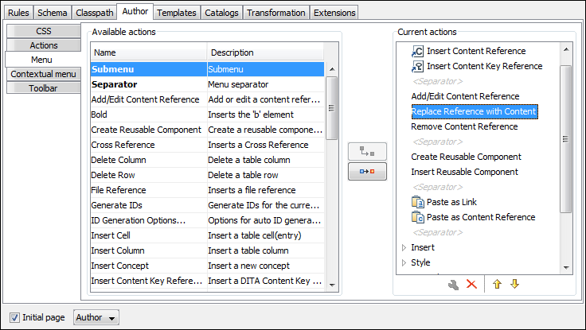

Customizing the Menu for a Framework
Defined actions can be grouped into customized menus in the Oxygen XML Editor menu bar.
-
The right side of the panel displays the current actions for that menu tree.
To
change its name, click this label to select it, then click the
 Edit
button.
Edit
button.
-
Select the Submenu label in the left panel section and the
appropriate label in the right panel section, then click the
 Add as child button. Change the submenu
name to Table, using the Edit button.
Add as child button. Change the submenu
name to Table, using the Edit button.
-
Select the Insert section action in the left panel section and
the Table label in the right panel section, then click the
 Add as sibling
button.
Add as sibling
button.
-
Now select the Insert table action in the left panel section and
the Table in the right panel section. Click the Add as child button.
Figure 1. Configuring the Menu 
When opening a test document for a custom framework in Author mode, the menu you created is displayed in between the Tools and the Document menus. The upper part of the menu contains generic Author mode actions (common to all document types) and the two actions created previously (with Insert table under the Table submenu).